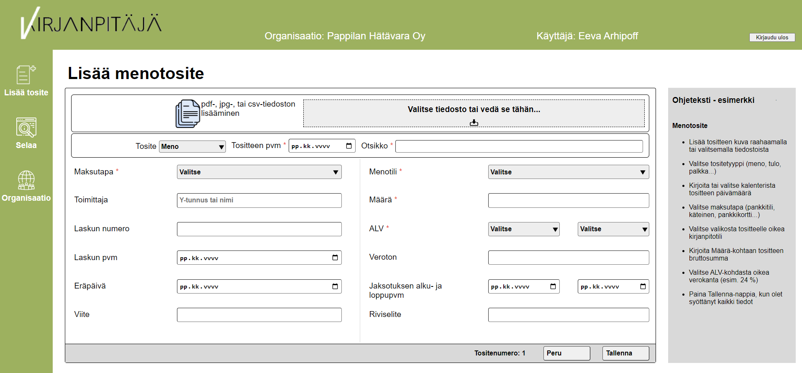

Tositteiden täyttöä helpotettiin mm. alasvetovalikoilla ja päivämäärän täyttämiseen tarkoitetulla kalenterilla.
Eeva Arhipoff
Kirjanpitäjä
Toisen vuoden opiskeluissa moduulissa "Asiakasprojektien toteuttaminen" tehtiin nimensä mukaisesti projekti, joka toteuttiin asiakkaan tarpeen pohjalta. Ryhmämme valitsi annetuista vaihtoehdoista tositteiden tallentamisen kirjanpitoyritykselle. Tämä olisi voitu toteuttaa pelkästään mallina, jolla ei ole toiminnallisuuksia. Onneksi ryhmämme koostui ahkerasta porukasta, ja halusimme ehdottomasti toteuttaa täysin toimivan sivuston. Ja hyvällä yhteistyöllä saimme tämän toteutettua lyhyessä määräajassa. Asikkaalta saatu palaute projektin lopussa oli todella positiivista.Tämän projektin aikana tutustuttiin syvällisemmin Scrum-menetelmään. Tiimi harjoittelikin kaikkea Scrumiin liittyvää: päivittäinen Daily, Backlog, Review ja Retrospektiivi tulivat varmasti tutummaksi projektin aikana. Myös asiakas oli mukana Teams-palavereissa Scrumin mukaisesti.

Projektin aikana käytetty:
- Figma
- HTML
- PHPMyAdmin
- PHP
- CSS
- JavaScript
- Jira
- Confluence
- Scrum
Omaa kädenjälkeä Kirjanpitäjässä:
Meno- ja tulotositteet
Projektissa pääroolini oli itse sivuston perusrungon luomisessa Figmassa tehdyn suunnitelman pohjalta sekä tositteiden tallentamiseen tarkoitetun sivun luominen. Osa tiimistä perehtyi kirjanpitoon ja selvitteli mitä tietoja lomakkeelle tarvitaan, jonka mukaan lomaketta muotoiltiin tarpeen mukaan. Samalta sivulta voidaan täyttää niin meno-, kuin tulotositekin, jolloin sivusto päivittyy kysymään vaadittuja tietoja lomakkeella. Lomakkeen alalaidassa näkyy myös juokseva tositenumero, jota asiakas toivoi lisättäväksi.
Tositteen täyttäminen
Laskut tallennetaan tietokantaan joka tapauksessa. Tallennuksen yhteyteen tein joitakin tarkastuksia syötettyihin tietoihin. Löydetyt ongelmat näytetään pop-uppina tallentajalle, jotta hän voi halutessaan tarkastaa annettuja tietoja. Tositteen syöttöön loin myös automaattisen verolaskurin, joka tarkastelee täytettäessä kenttiin syötettyjä arvoja ja laskee niiden perusteella verottoman hinnan.